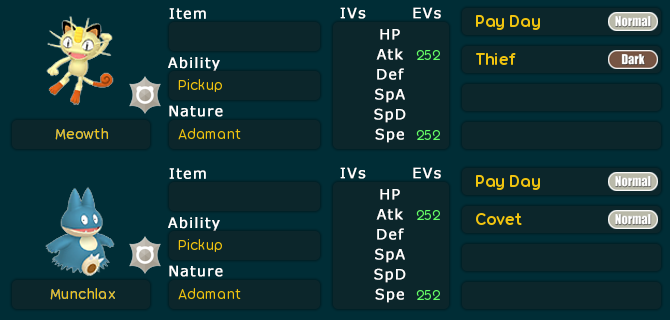
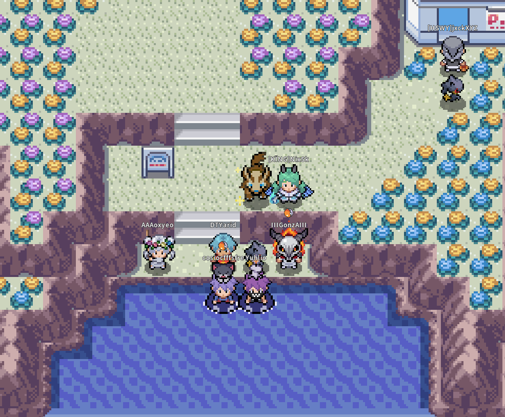
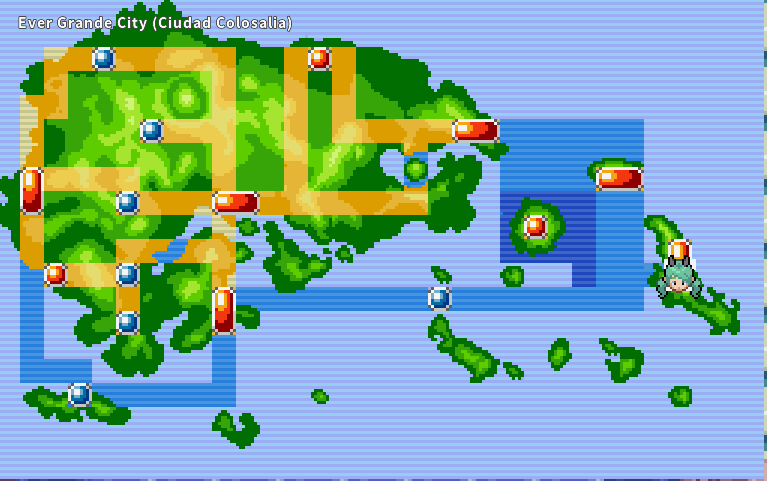
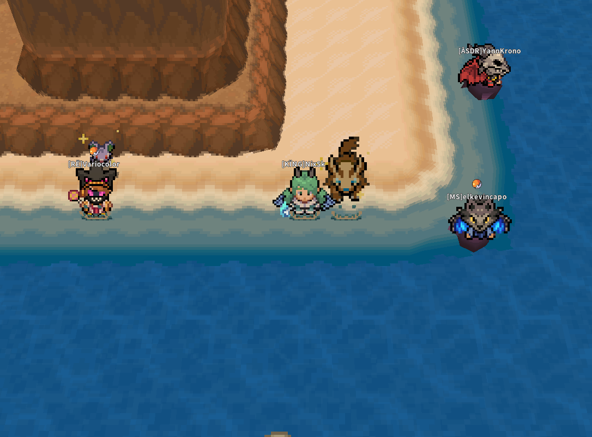
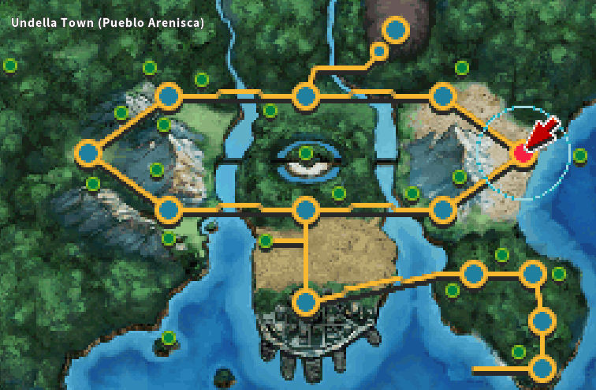

💰 Farmeo de Escamas Corazón 
💡 Estrategia y Herramientas
• Herramienta:  Supercaña / Caña Vieja según la zona.
Supercaña / Caña Vieja según la zona.
• Movimientos: Usar Ladrón / Antojo en Luvdisc para robarle la Escama Corazón.
• Extras: Usar Día de Pago en los demás pokes para ganar dinero extra.
📋 PokePaste del Equipo
📍 Colosalia (Ever Grande City)




📍 Bahía Arenisca (Undella Bay)

